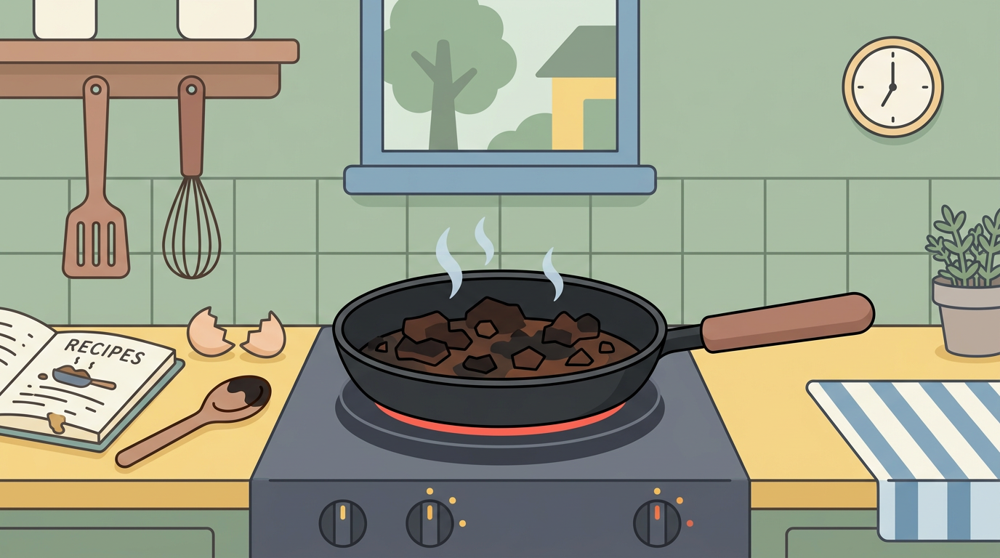

Derfor brænder sin aftensmad på (og hvad det afslører om din hverdag)
Du kender det måske godt: Ét hurtigt scroll på de sociale medier... og pludselig lugter hele lejligheden af katastrofe.
Men hvad hvis din brændte aftensmad faktisk siger mere om dig, end du tror?
Klik på linket for at læse med og find ud af, hvorfor din mad brænder på... og hvad det afslører om din livsstil.
Derfor brænder sin aftensmad på (og hvad det afslører om din hverdag)

Du kender det sikkert allerede: Du sætter maden over, tænker “jeg har lige to minutter”… og pludselig er der røg i køkkenet, brandalarmen hyler, og din aftensmad er reduceret til en sort, trist skygge af, hvad den engang var. Ét hurtigt scroll på TikTok eller en besked, der lige skulle svares – og så gik det galt. Men hvorfor sker det egentlig så ofte?
For mange i 20’erne og 30’erne handler det ikke om, at vi ikke kan lave mad. Det handler om, at vi prøver at jonglere alt muligt andet samtidig. Arbejde, studie, sociale relationer og den konstante digitale støj gør, at madlavning ofte bliver en baggrundsaktivitet i stedet for noget, vi er til stede i. Resultatet? Brændt pasta, tør kylling og en gryde, der kræver en halv times iblødsætning.
Der er også en anden faktor: Vi er vokset op med hurtige løsninger. Takeaway, meal kits og nemme opskrifter har gjort madlavning mere tilgængelig, men måske også mindre intuitiv. Når vi så faktisk står i køkkenet uden en præcis guide, kan selv små fejl – som for høj varme eller et øjebliks uopmærksomhed – hurtigt eskalere. Det kræver øvelse at “mærke” maden, og det er en evne, mange aldrig rigtig får opbygget.
Og lad os være ærlige: Vi undervurderer ofte, hvor hurtigt ting kan gå galt. Et par minutter føles som ingenting, men på en varm pande kan det være forskellen mellem perfekt stegt og totalt ødelagt. Især hvis du multitasker med serier, sociale medier eller bare tankemylder efter en lang dag.
Men der er også noget lidt… menneskeligt over det. Den brændte aftensmad er næsten blevet et symbol på vores livsstil. Vi vil gerne gøre det hele – være produktive, sociale, opdaterede og samtidig leve sundt og hjemmelavet. Det er en svær balance, og nogle gange betaler aftensmaden prisen.
Heldigvis er der håb. Små ændringer kan gøre en stor forskel. Start med at give madlavning din fulde opmærksomhed – bare i 20-30 minutter. Læg telefonen væk, skru lidt ned for varmen, og vær til stede i processen. Det lyder banalt, men det kan være overraskende effektivt. Derudover kan det hjælpe at holde sig til simple retter i en travl hverdag. Ikke alt behøver være gourmet.
Og hvis uheldet alligevel er ude? Så tag det med et grin. Vi har alle stået der med en sort gryde og tænkt “hvordan skete det her?”. Det er en del af læringen – og en del af livet.
Så næste gang din mad brænder på, er det måske ikke bare en fejl. Måske er det et lille tegn på, at tempoet er lidt for højt, og at det er tid til lige at sænke farten. Også i køkkenet.